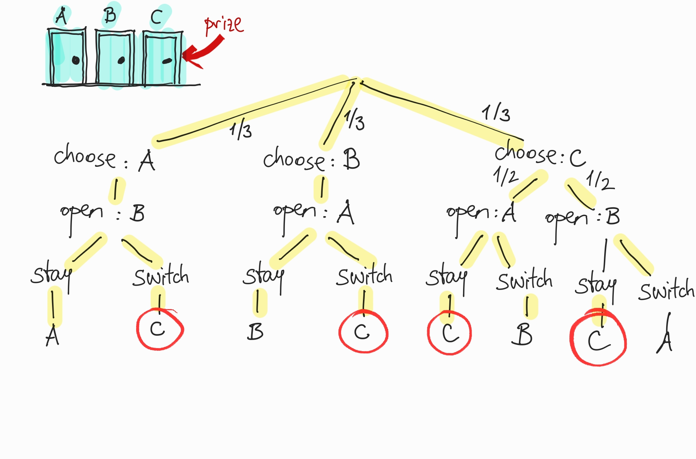

The Monty Hall Problem, once an apparent paradox that perplexed even the best minds, it has become a common example in all kinds of probability books. So, probably an introduction to the problem is not needed. But in case you need it, here’s a description from Wikipedia:
Suppose you’re on a game show, and you’re given the choice of three doors: Behind one door is a car; behind the others, goats. You pick a door, say No. 1, and the host, who knows what’s behind the doors, opens another door, say No. 3, which has a goat. He then says to you, “Do you want to pick door No. 2?” Is it to your advantage to switch your choice?
If you had the slightest interest in probability in the last 20 years, you’ve read that switching increases your odds tremendously. It’s not easy to grasp, though. It goes against our intuition.
A long time ago, I had written a popular article on it in Turkish. Still, I did not feel like I completely grasped the idea. So I thought more deeply on it.
While I’m on it, I developed some generalizations of the problem: What if we have more than three doors? What if we have many doors and the host opens more than one of them?
It turns out that, even with these generalizations, you should always switch. Read on to see why.
Chance tree analysis
Let’s label the doors as A, B, and C. Assume that the prize is behind door C. Since we can label the doors any way we like, there will be no loss of generality.
After we choose a door, the host opens another door. He deliberately opens the door that doesn’t have the prize. If you chose A, he’ll open B. If you chose B, he’ll open A. If you chose C, he’ll open either A or B. After that, you can either stay at the door you chose, or switch to the other closed door.
Here’s the chance tree for the process:

Wins are shown with red circles. When we switch, we win the prize in two of the outcomes. When we stay, we also win in two outcomes, but the probabilities of these are not equal. Winning chance when staying is half of the winning chance when switching (just multiply the branch probabilities).
Here’s a simpler way to look at this: When we choose A or B, switching guarantees a win, and staying guarantees a loss. Conversely, when we choose C, switching guarantees a loss, while staying guarantees a win.
If we choose doors randomly at the start, probability of choosing A or B is 2/3, while the probability of choosing C is 1/3. Then, winning probability with switching is 2/3.
Now let’s generalize this analysis to many doors.
More than three doors
Suppose we have 4, 5, or 100 doors, instead of 3. The rules are the same: The host opens a single door knowing that it doesn’t have the prize. We then have the option to switch to one of the unopened doors, or stay at the one we originally chose. The game ends afterward, and we win or lose based on the final door of our choosing.
For example, suppose there are four doors, and the prize is behind door number 4. We initially choose door #1. The host can open doors #2 or #3. Suppose he opened #2. If we want, we can switch to #3 or #4. If we stay, we lose. If we switch to #4, we win.
Let the total number of doors be \(n\). We can see the following to hold:
The probability of choosing the right door at the start is \(1/n\).
The probability of choosing a wrong door at the start is \((n-1)/n\)
If we choose a wrong door and we switch, the probability of win is \(1/(n-2)\). (There are \(n-2\) doors available to switch, and only one is the right one.)
If we choose a wrong door and we stay, the probability of win is 0.
If we choose the right door and we switch, the probability of win is 0.
If we choose the right door and we stay, the probability of win is 1.
Combining these in a formal way, we can figure out the probability of win with switching:
With four doors (\(n=4\)), the probabilities are \[\begin{align*}
\mathrm{P(win|switch)} &= 3/8 \\
\mathrm{P(win|stay)} &= 1/4 \\
\end{align*}\]
The probabilities do not add up to 1 because when \(n>3\) there are other unopened doors, and the prize may be behind one of them.
In general, since \(\frac{n-1}{n(n-2)}>\frac{1}{n}\) switching always increases the chance of win. However, the advantage of switching becomes less as the number of doors increases.
Simulation of Monty Hall with multiple doors
Here’s a simulation of winning probability with arbitrary number of doors, using random trials. We run it for 3, 4, 5, 6, 10 and 100 doors.
Now suppose that after you make your initial choice, the host opens not one, but multiple doors. Again, with the knowledge that none of the opened doors contain the prize.
This makes sense only if there are more than three doors. With four doors, the host can open one or two doors. With five doors, the host can open one, two, or three doors, etc. (The number is fixed for the game, not randomly decided by the host.) That way, you always have a chance of switching to another doors.
If there are \(n\) doors, then the number \(k\) of doors opened by the host must be constrained to \(k<=n-2\).
The analysis above is done for the case of \(n>3\) and \(k=1\). If we assume general \(k\), the only factor we need to change is the probability of winning, given a wrong initial choice and switching.
Since it holds that \[\frac{n-1}{n-k-1}\frac{1}{n} > \frac{1}{n},\] switching is always preferable.
Here are some numerical values for the winning probability when switching:
for n in (4,5):for k inrange(1, n-2+1): p1 = (n-1)/(n-k-1)/n p2 =1/nprint(f"n = {n:3d}, k = {k:2d}, P(win|switch) = {p1:.3f}")n =100for k in (1, 50, 95, 98): p1 = (n-1)/(n-k-1)/n p2 =1/nprint(f"n = {n:3d}, k = {k:2d}, P(win|switch) = {p1:.3f}")
n = 4, k = 1, P(win|switch) = 0.375
n = 4, k = 2, P(win|switch) = 0.750
n = 5, k = 1, P(win|switch) = 0.267
n = 5, k = 2, P(win|switch) = 0.400
n = 5, k = 3, P(win|switch) = 0.800
n = 100, k = 1, P(win|switch) = 0.010
n = 100, k = 50, P(win|switch) = 0.020
n = 100, k = 95, P(win|switch) = 0.247
n = 100, k = 98, P(win|switch) = 0.990
Now suppose that the host opens a random number of doors\(k\) between 1 and \(n-2\), choosing this number with equal probability.
Then, the winning probability with switching is the average of these probabilities for fixed \(k\):
The winning probability with staying is still \(1/n\), as it does not depend on the number of opened doors.
As the harmonic numbers are always greater than or equal to 1, it holds that
\[ \frac{n-1}{n(n-2)} H_{n-2} > \frac{1}{n},\]
so, it is still favorable to switch.
Here are some numerical values for the winning probability.
for n in (4,5, 10, 100): hn =sum([1/i for i inrange(1,n-1)]) p1 = (n-1)/(n-2)*hn/n p2 =1/nprint(f"n = {n:3d}, P(win|switch) = {p1:.3f}, P(win|stay) = {p2:.3f}")
n = 4, P(win|switch) = 0.562, P(win|stay) = 0.250
n = 5, P(win|switch) = 0.489, P(win|stay) = 0.200
n = 10, P(win|switch) = 0.306, P(win|stay) = 0.100
n = 100, P(win|switch) = 0.052, P(win|stay) = 0.010